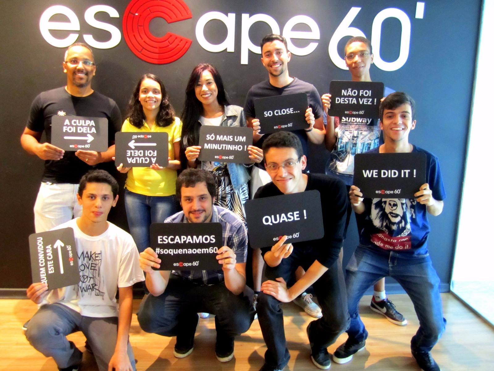

Fui orientada pelo professor João Fernando Sarubbi fazendo iniciação científica voluntária na área de pesquisa operacional, buscando resolver um problema variante do caxeiro viajante: o problema de mínima latência utilizando um algorítimo heurístico.
O grupo de computação competitiva surgiu em 2014 e consiste em um grupo de alunos focado em treinar para competições de programação. Participei de maratonas de níveis nacionais e regionais nos anos de 2016 e 2017.
O programa de educação tutorial possui três vertentes: ensino, pesquisa e extensão. Tive a oportunidade de participar do PET de Engenharia de Computação do CEFET-MG desenvolvendo diversas atividades como organização de palestras, minicursos, visitas técnicas, bem como, desenvolvimento WEB para projetos instituicionais e de extensão. Também foi o lugar em que tive o primeiro contato com a metodologia ágil SCRUM.
O projeto de extensão uma creche inteligente teve como objetivo a automação predial de uma creche com o objetivo de economizar energia e melhorar a segurança. Fiz parte do grupo de arquitetura, sendo responsável pela modelagem e criação do banco de dados, bem como interfaces de comunicação entre a aplicação e o banco de dados.
O PROGEST é um Grupo de Pesquisa do CEFET-MG certificado desde 2008 pelo CNPq. O grupo desenvolve projetos que representam a pesquisa e divulgam conhecimento técnico através de diversas atividades. Fui tutora de Informática no curso de instalações prediais oferecido gratuitamente pelo grupo que é composto por voluntários.